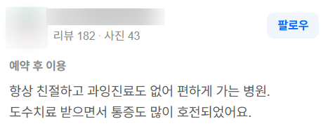
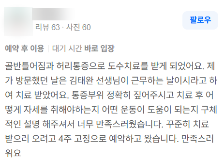
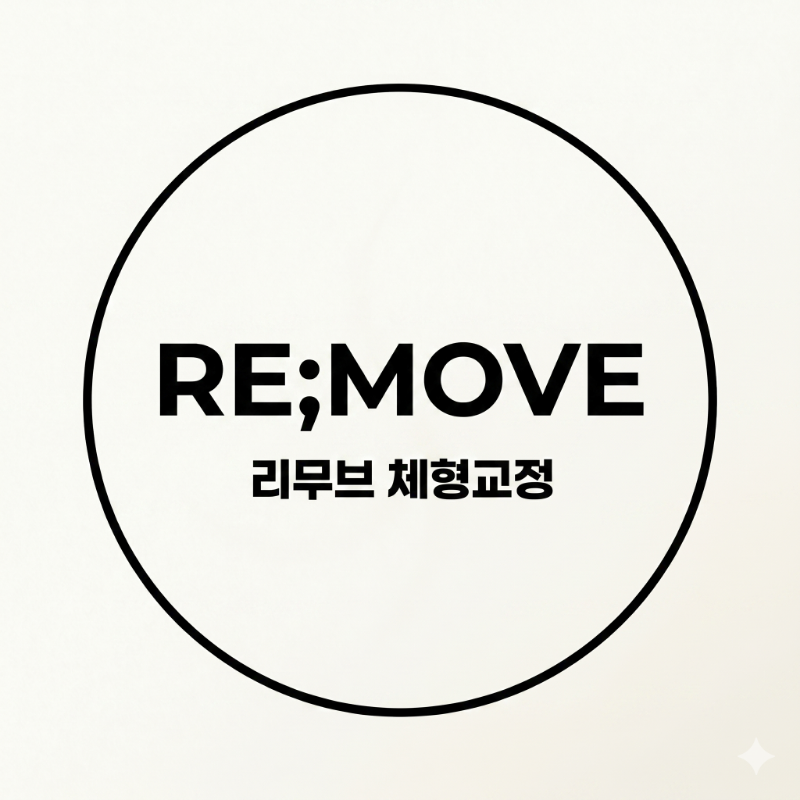

안녕하세요.
물리치료사 출신 체형교정 전문가, 리무브 체형교정 센터장입니다.

구리 갈매동에 '리무브 체형교정'의 문을 열고 회원님들을 맞이하면서, 블로그 첫 글을 어떤 주제로 남겨볼까 고민하다, 병원 시절 리뷰들을 다시 한번 읽어보았습니다.
이런저런 리뷰들을 읽다 보니, 당시 치료실에서 환자분들이 무심한 듯 툭 건네주셨던 말씀들이 떠오르더군요.
"선생님이 집 가까운데 계셔서 너무 안심이 돼요."
"어제 허리가 좀 아프긴 했는데, 오늘 선생님 보러 오면 되니까 별로 걱정 안 했어요."

사실 그 당시에는 주변에 병원 많이 있는데 뭘 그렇게까지 말씀하시냐고 손사래를 치곤 했지만,
최근 병원을 그만둔다고 환자분들께 하나둘 말씀드리니
"이제 어디를 또 찾아봐야 되냐..."
"왜 그렇게 멀리 가시냐..."
이런 말씀들을 진심어린 눈빛으로 하시더라구요. 너무 진심이라 좀 당황했습니다;;허허

갑자기 몸이 아플 때, "이곳에 가면 무조건 괜찮아질 수 있다"는 확신
그리고 그런 든든한 전문가가 내 집 주변에 있다는 안도감.
평소 몸이 자주 아픈 분들에게는 그 하나가 얼마나 큰 힘이 되는지, 그리고 제가 그 지역에서 어떤 존재였는지 새삼 느끼고 있습니다.
💡 그런데 왜, 잘 다니던 병원을 나와 '리무브 체형교정'을 열었을까요?
병원 도수치료실에 있을 때도 정말 많은 분들이 저와 꾸준히 함께 했었고, 실력 하나만큼은 누구보다 인정받았습니다.

치료를 받고 나면 제 근무 날짜에 맞춰 "선생님 계시는 날로 4주 고정 예약하고 가겠다"며 신뢰를 보내주시는 분들도 참 많았습니다.
하지만 최근 의료 제도가 바뀌고 도수치료가 관리급여화되면서, 제가 오랜 시간 당연하다고 생각했던 원칙들을 더이상 병원 안에서 온전히 지키기가 너무나 어려워졌습니다.
첫번째로, 이번에 시행된 관리급여라는 정책 때문에 치료시간이 제한되고, 비교적 짧은 시간 내에 억지로 효과를 내야만 하는 환경이 되었습니다. 물론 짧은 시간 안에 통증을 줄여드리는 것은 누구보다 자신 있습니다. 하지만 그것만으로는 일시적일 뿐 '근본적인 해결'이 되지 않는다는 것을 누구보다 잘 알기에, 마음 한구석이 편치 않았습니다.
두번째로, 무엇보다 가장 견디기 힘들었던 것은, 제대로 체형을 잡고 운동까지 재교육하려면 최소 1시간 정도의 치료가 필요한 분인데도, 정책때문에 이틀에 걸쳐 쪼개서 관리해야만 하는 상황이었습니다.
"내 눈앞의 환자분에게 오늘 필요한 치료를 온전히 다 해드리지 못한다는 미안함,
그리고 전문가로서의 양심..."
환자분들은 병원을 믿고 저를 믿고 오는건데, 매번 '관리급여 정책 때문에' 라고 설명드리는 것도 오래 못할 일이더라구요. 그래서,
'더 이상 타협하지 말자. 고객에게 진정으로 도움이 되는 서비스와 내가 옳다고 믿는 원칙을 온전히 쏟아부을 수 있는 공간을 만들자.'
그 결심 하나로 수년간 일해온 병원 생활을 내려놓고, 구리 갈매동에 [리무브 체형교정]의 문을 열게 되었습니다.
🌿 "불편함을 Remove, 내 몸을 Re-move"

저희 센터의 슬로건에는 제 모든 임상 철학과 다짐이 담겨 있습니다.
"불편함을 Remove, 내 몸을 Re-move"
오랜 시간 여러분을 괴롭혀온 만성적인 불편함과 틀어짐은 뿌리부터 깨끗하게 제거(Remove)하고,
굳어버린 신체에 본래의 가볍고 자유로운 움직임을 다시(Re-move) 되찾아 드리겠다는 뜻입니다.
리무브 체형교정에서는 오늘 회원님에게 필요한 교정 과정을 오늘 끝내겠습니다.
1. 근육/근막: 굳어버린 과긴장을 빠르고 정확하게 풀어드리고
2. 신경: 눌려있던 신경의 길을 미끄러지듯 터주며 (신경가동술)
3. 관절: 틀어진 뼈와 관절 역학의 가동성을 정상화하고
4. 운동 재교육: 회원님의 뇌가 올바른 자세 패턴을 평생 기억하도록 1:1 맞춤 재활운동까지
"이 공간에서 저와 함께 보내는 매 시간만큼은, 결코 단 1분도 헛되지 않도록."
찾아오시는 고객 한 분 한 분에게 최선을 다할 것을 약속드립니다.
여기저기 병원을 전전하며 관리를 받아도 제자리였거나, 항상 찌뿌둥하고 틀어진 만성 체형 불균형으로 고통받고 계시다면 편하게 문을 두드려 주세요.
"우리 집 주변에 이런 곳이 있어서 정말 다행이다", "여기에 오니 무조건 안심이 된다"
그 믿음을, 여러분의 몸으로 직접 증명해 드리겠습니다.

[다음 편 예고]
*"선생님 근무하는 날로 4주 예약할게요"*
병원 도수치료실 시절, 수많은 환자분들이 저를 콕 집어 지명했던 5가지 진짜 이유와 실제 회원님들의 후기를 다음 글에서 솔직하게 들려드리겠습니다.
긴 글 읽어주셔서 진심으로 감사합니다.
[리무브 체형교정 찾아오시는 길]
📍 경기 구리시 갈매순환로 154 갈매현대테라타워 S동 L104호
💬 문의/예약: 네이버 톡톡 또는 댓글로 편하게 남겨주세요.
#리무브체형교정 #구리체형교정 #갈매체형교정 #물리치료사출신 #체형교정센터 #재활운동 #자세교정 #골반교정 #체형분석 #체형관리